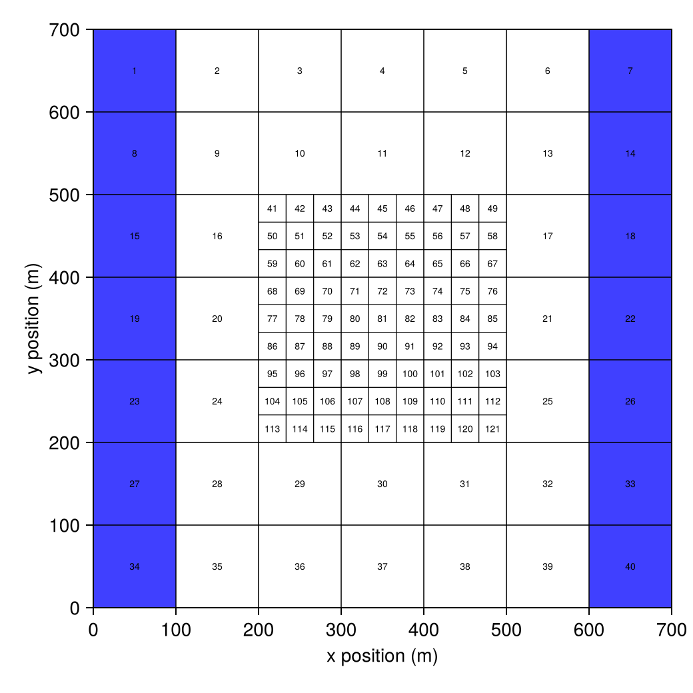
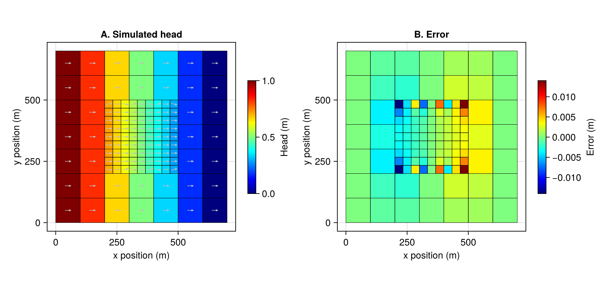
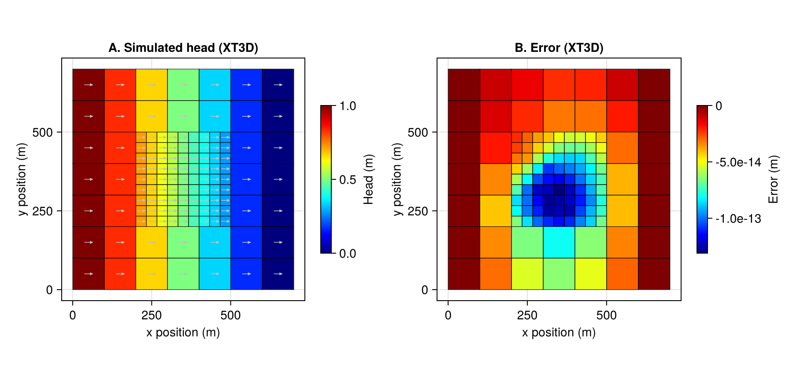
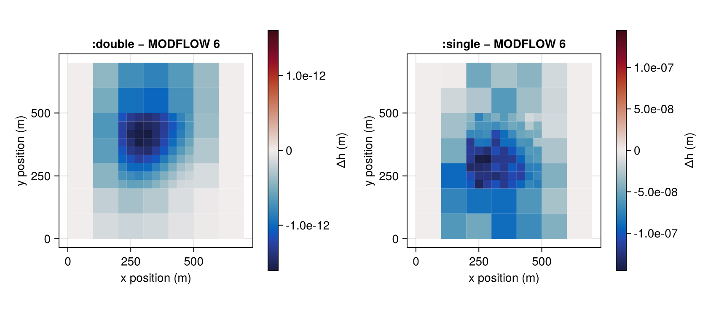
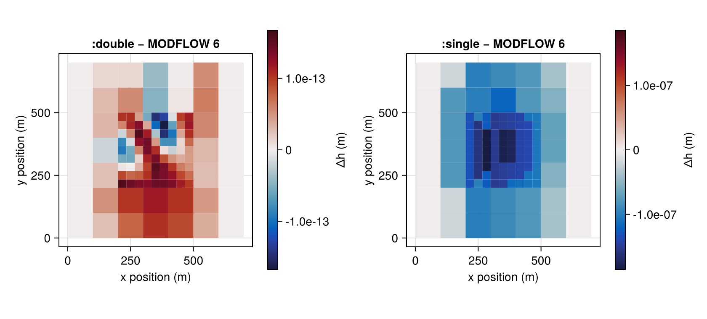

A nested grid with DISV, and XT3D
The first example of the MODFLOW-USG documentation (Panday and others, 2013): a square aquifer of 700 m × 700 m in one layer, with a block of finer cells nested in its middle, on an unstructured (DISV) grid of 121 cells. Constant heads of 1 m on the west edge and 0 m on the east edge drive a uniform flow from west to east, so the exact solution is a head that falls linearly with x. Units are metres and days.
This is the MODFLOW 6 example ex-gwf-u1disv. It also runs the same grid with the XT3D formulation of NPF (ex-gwf-u1disv-x), which removes the errors around the nested block.
Input and the MODFLOW 6 runs
ExampleTools (docs/ExampleTools.jl in the repository) takes the input from the released mf6examples.zip, sets the tight closures of the parity tests in the IMS files, and runs MODFLOW 6.8.2.
using ModflowGPU, CairoMakie
mf6 = example_run("ex-gwf-u1disv")
mf6x = example_run("ex-gwf-u1disv-x")
(mf6.mode, mf6.mf6_time), (mf6x.mode, mf6x.mf6_time)(("tight", 0.018909045), ("tight", 0.020041817))The ModflowGPU runs
In :double and in :single precision on the CPU, with the default options.
runs = Dict(p => run_modflowgpu(mf6.dir, p) for p in (:double, :single))
runsx = Dict(p => run_modflowgpu(mf6x.dir, p) for p in (:double, :single))
r = runs[:double].result
rx = runsx[:double].result
r.converged, rx.converged(true, true)The grid
The cells of the DISV grid, read from MODFLOW 6's binary grid file, with their numbers and the constant-head cells of the west and east edges (blue), as in the MF6 example. The vertex numbers of the MF6 figure are left out.
g = read_vertex_grid(mf6.dir)
fig = Figure(; size = (520, 520))
ax = Axis(fig[1, 1]; aspect = DataAspect(), xlabel = "x position (m)", ylabel = "y position (m)")
map_cells!(ax, g, budget_cells(g, r.budget_file, "CHD"); color = (:blue, 0.75))
map_grid!(ax, g)
text!(ax, g.xc, g.yc; text = string.(1:g.ncpl), align = (:center, :center), fontsize = 7)
limits!(ax, 0, 700, 0, 700)
save_figure(fig, "ex-gwf-u1disv-grid")
Heads and the error
(A) The heads with the specific discharge (computed from the FLOW-JA-FACE record of ModflowGPU's budget file as MODFLOW 6 computes it for SAVE_SPECIFIC_DISCHARGE, since ModflowGPU does not write the DATA-SPDIS record), and (B) the error: the difference with the linear head of the exact solution, which is 1 m at x = 50 m and 0 m at x = 650 m. The error comes from the connections between the coarse and the fine cells, which the standard conductance formulation does not treat exactly; MODFLOW 6 shows the same error.
h = read_head(open_head_file(r.head_file), 1)
flowja = vec(only(read_budget(open_budget_file(r.budget_file); text = "FLOW-JA-FACE")))
qx, qy = specific_discharge(g, flowja, h)
exact = (1.0 / (50.0 - 650.0)) .* (g.xc .- 50.0) .+ 1.0
fig = Figure(; size = (900, 430))
ax = Axis(fig[1, 1]; aspect = DataAspect(), xlabel = "x position (m)", ylabel = "y position (m)", title = "A. Simulated head")
hm = map_heatmap!(ax, g, layer_values(g, h, 1); colormap = :jet)
map_grid!(ax, g)
map_vectors!(ax, g, qx, qy)
Colorbar(fig[1, 2], hm; label = "Head (m)", height = Relative(0.5))
ax = Axis(fig[1, 3]; aspect = DataAspect(), xlabel = "x position (m)", ylabel = "y position (m)", title = "B. Error")
hm = map_heatmap!(ax, g, layer_values(g, h, 1) .- exact; colormap = :jet)
map_grid!(ax, g)
Colorbar(fig[1, 4], hm; label = "Error (m)", height = Relative(0.5))
save_figure(fig, "ex-gwf-u1disv-head")
The specific discharge computed here from ModflowGPU's flows, against the DATA-SPDIS record that MODFLOW 6 wrote (the largest difference, in m/d):
spdis = only(read_budget(open_budget_file(only(filter(endswith(".cbc"), readdir(mf6.dir; join = true)))); text = "DATA-SPDIS"))
maximum(abs.(qx .- spdis.aux[1, :])), maximum(abs.(qy .- spdis.aux[2, :]))(8.200254711376864e-15, 6.984711739706976e-15)With XT3D
The same grid with the NPF option XT3D (ex-gwf-u1disv-x). XT3D computes the flow across a face from the full gradient near the face, estimated from the heads of the neighbouring cells, so the coarse–fine connections no longer distort the flow: the error (B) is at the level of the solver closure instead of centimetres. The matrix of an XT3D model also couples each cell to the neighbours of its neighbours (1557 matrix entries here instead of 601).
hx = read_head(open_head_file(rx.head_file), 1)
flowjax = vec(only(read_budget(open_budget_file(rx.budget_file); text = "FLOW-JA-FACE")))
qxx, qyx = specific_discharge(g, flowjax, hx)
fig = Figure(; size = (900, 430))
ax = Axis(fig[1, 1]; aspect = DataAspect(), xlabel = "x position (m)", ylabel = "y position (m)", title = "A. Simulated head (XT3D)")
hm = map_heatmap!(ax, g, layer_values(g, hx, 1); colormap = :jet)
map_grid!(ax, g)
map_vectors!(ax, g, qxx, qyx)
Colorbar(fig[1, 2], hm; label = "Head (m)", height = Relative(0.5))
ax = Axis(fig[1, 3]; aspect = DataAspect(), xlabel = "x position (m)", ylabel = "y position (m)", title = "B. Error (XT3D)")
hm = map_heatmap!(ax, g, layer_values(g, hx, 1) .- exact; colormap = :jet)
map_grid!(ax, g)
Colorbar(fig[1, 4], hm; label = "Error (m)", height = Relative(0.5), tickformat = expformat)
save_figure(fig, "ex-gwf-u1disv-x-head")
The largest error of each formulation (m):
maximum(abs, vec(h) .- exact), maximum(abs, vec(hx) .- exact)(0.013992222588883774, 1.3100631690576847e-13)Comparison with MODFLOW 6
The head differences between ModflowGPU and MODFLOW 6, in both precisions.
h6 = read_head(open_head_file(only(filter(endswith(".hds"), readdir(mf6.dir; join = true)))), 1)
d = [":$p − MODFLOW 6" => read_head(open_head_file(runs[p].result.head_file), 1) .- h6 for p in (:double, :single)]
save_figure(difference_map(g, d; unit = "m", xlabel = "x position (m)", ylabel = "y position (m)"), "ex-gwf-u1disv-difference")
The largest head and budget differences, next to the values of the parity table, and the wall times (CPU: this build, including compilation for the first run of the session; GPU: the parity table, AMD Radeon RX 7800 XT).
stats = Dict(p => (; cmp = compare_with_mf6(mf6.dir, runs[p]), runs[p].time) for p in (:double, :single))
comparison_table("ex-gwf-u1disv", stats)| Preset | max |Δh| (m), this build | max |Δh| (m), parity table | Budget, this build | Budget, parity table | CPU time, this build (s) | GPU time, parity table (s) |
|---|---|---|---|---|---|---|
:double | 1.6e-12 | 1.6e-12 | 5.9e-13 | 5.9e-13 | 0.00 | 0.00 |
:single | 1.4e-07 | 1.4e-07 | 1.0e-07 | 1.1e-07 | 0.00 | 0.00 |
Budget: the largest difference of a budget-file flow or a listing-table rate, relative to the total inflow of its time step.
With XT3D (ex-gwf-u1disv-x):
h6x = read_head(open_head_file(only(filter(endswith(".hds"), readdir(mf6x.dir; join = true)))), 1)
d = [":$p − MODFLOW 6" => read_head(open_head_file(runsx[p].result.head_file), 1) .- h6x for p in (:double, :single)]
save_figure(difference_map(g, d; unit = "m", xlabel = "x position (m)", ylabel = "y position (m)"), "ex-gwf-u1disv-x-difference")
statsx = Dict(p => (; cmp = compare_with_mf6(mf6x.dir, runsx[p]), runsx[p].time) for p in (:double, :single))
comparison_table("ex-gwf-u1disv-x", statsx)| Preset | max |Δh| (m), this build | max |Δh| (m), parity table | Budget, this build | Budget, parity table | CPU time, this build (s) | GPU time, parity table (s) |
|---|---|---|---|---|---|---|
:double | 1.7e-13 | 1.7e-13 | 1.9e-13 | 1.9e-13 | 0.43 | 0.01 |
:single | 1.9e-07 | 1.9e-07 | 1.2e-07 | 1.2e-07 | 0.42 | 0.18 |
Budget: the largest difference of a budget-file flow or a listing-table rate, relative to the total inflow of its time step.